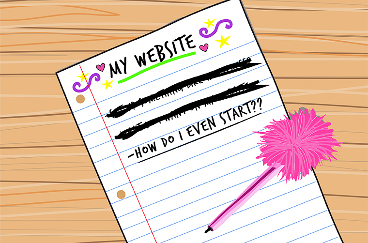

There are two questions you may be asking yourself: When is it a good time to get a website for my business? or I have a website, but it’s outdated. When should I get a website redesign? My answer to both of those questions is: Now.
To be a legitimate business you don’t need a storefront or employees (I have neither), but you do need a website. A website makes you credible. A website proves that you’ve got it together.
Also, when you have a website you are opening your business to the world, not just your nearby community. You will have more opportunity to gain customers, clients, fans, etc. when you put yourself online.
In my Freelancing Series , I talked about the 1,000 True Fans theory. Essentially, you can make a decent living if you have 1,000 people who will always buy your products because they love what you do.
Will it be harder to get those true fans within a 15 mile radius or a 25,000 mile radius? (That’s the size of the Earth btw). Also, social media and search engines are truly the vehicles of success today. If you don’t have a website, less people will find you with a google search. You can make a business profile on social media, but you have limited to no control over the SEO, design and functionality. Not having a website for your business caps off your opportunity for success.
So, now we are all agreed. You need a website. What’s Next? If you have someone specific in mind to make your website, give that person or team a heads up that you are putting a website plan together.
I am typically booking projects 1-3 months in advance, so if you give me a heads up that you are wanting a website in the near future, I can likely save you spot on the list. Sometimes, I get phone calls from people that need someone to start on their website right now, and I’m just too busy to take it on.
Freelancers and small teams can quickly get booked up, so start communication early!
Now, it’s time to start putting together your website plan.
A designer/developer can’t provide a quote for your website unless you have a basic plan for your website. There’s been countless times that someone has contacted me about a website, and then I ask them a few standard questions, and within minutes they realize that they don’t even know what they want for their website, or maybe they don’t even know what they want out of their business.
It’s important to have a clear idea of what you want for your website, before you contact a designer/developer or an agency for the job. When you have a clear idea of what you want, we can provide a quote to you. If you just want something that’s “simple, not too many pages, but looks modern and clean” that could mean something different to each person. I think a small website is no more than four pages. Others might think a small website is no more than ten pages.
Here’s your homework before you start a website:
- Do you have the domain or hosting for your website?
- How many pages will your website have?
- How many of those pages will have static content and how many pages will have regularly updated content? I.e: blog posts, events, products for sale, staff members, etc.
- Do you have a desired deadline?
- Do you know your competition? Who, out of your competition, has a great website?
- What is the purpose of people visiting your site? What action do you want them to take? I.e. contact you for a quote or buy a product.
- Have you considered SEO (search engine optimization)? What are some keywords that you’d like your website to rank for?
- Do you have images and/or videography for your website?
- Do you have a logo?
- Do you have copy for website? I.e. about page, staff bios, etc. Once you’ve done your homework, now it’s time to reconnect with the person or team that you first contacted about a website and ask for a quote.
If you have a website plan, it’s easier for me to provide a quote and it’s easier for me to start work on the website.
Conclusion:
Making a website is work, not only for me, but also for you, the client. When you hire someone to make your website, you’re not completely off the hook. No one knows your business better than you do, so you want to be involved! A website forces you to get all your ducks in a row — photography, copy, contact information, products ready to be sold. It proves that you are capable and credible to run a business—to yourself and the world.